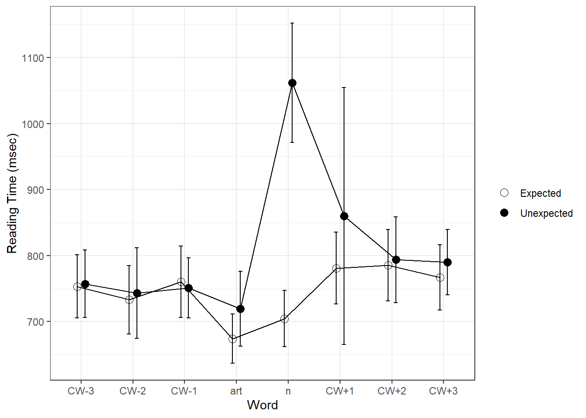

#install.packages("gt")
library(gt)
library(tidyverse)
library(here)
library(knitr)Homework 5
Homework 5
Prediction in the Maze
This study explores the role of prediction in language comprehension.
Even intuitively, we can realize that prediction is natural to understanding of written in spoken language in some form – it’s the reason we’re able to anticipate how a sentence will end, perhaps leading us to interject or tune out before an utterance has finished.
One way prediction has been tested in the past is through the alternating use of high-cloze and unexpected nouns in constrained sentences. High-cloze nouns associated with either indefinite article (a/an) were contrasted with unexpected nouns associated with the other article; so, in a sentence like “The man rode ___“, the nouns might be”a bicycle” (high-cloze) and “an elephant” (unexpected). Reaction times and correctness scores are then measured and compared.
To measure this, an A-maze task was conducted using article-noun pairings like the one above. In an A-maze task, participants select one word from pairs until the sentence is complete. These pairs are composed of a target and a distractor word. A distractor word is one which could not logically fit into a given sentence. So, if the goal were to make the sentence “The man rode a bicycle,” then the third word pairing might be [rode/pepper]. Each time a word is chosen, the next pair of words is shown. Eventually, one of these word pairs contains an indefinite article. The hypothesis is that, if the article corresponds to a noun that would be expected to follow (“[ride] a bicycle”), the participant will tend to answer correctly more often, and with less delay, than in the alternative case (“[ride] an elephant”). This would then suggest that prediction is aiding the comprehension and completion of these sentences.
Importing Data
here::i_am("analysis/hw5-lebow.qmd")here() starts at C:/Users/jesse/Documents/GitHub/homework-5-jesselebowd <- read.csv(here("data/delong maze 40Ss.csv"),
header = 0, sep = ",", comment.char = "#", strip.white = T,
col.names = c("Index","Time","Counter","Hash","Owner","Controller","Item","Element","Type","Group","FieldName","Value","WordNum","Word","Alt","WordOn","CorrWord","RT","Sent","TotalTime","Question","Resp","Acc","RespRT"))These are the column names, in order, and what they represent:
Index - Participant number. Time - When the assessment began. Counter - (I’m not sure) Hash - A hashed version of the participant’s IP address. Owner - Whether the participant was logged in as the study owner at the time (false for all participants). Controller - The kind of assessment in that row. Either form (entry survey), Maze (the task itself), or Question (about the task). Item - Corresponds to a specific task, including the intro survey, practice questions, and each individual assessment for the maze tasks. Element - Everything but question is 0, and question is 1. Type - the type of assessment. Can be intro, practice, or code corresponding to a specific task. Group - Group that the individual task belongs to. FieldName - Only for the self-questionnaire at the start. Value - Answers to the questionnaire questions. WordNum - Number of the word as part of a sequence in the word-pair discrimination portion. Word - The actual word. Alt - The corresponding distractor word. WordOn - Which side (left = 0, right = 1) the correct word is on. CorrWord - Whether the participant got it correct the first time. RT - Time (ms) from reading until the first answer (correct or not). Sent - The full sentence from the individual task. TotalTime - Time (ms) to correct word, including initial incorrect responses. Question - Comprehension question for the sentence. Resp - The answer given to the prior question. Acc - 1 if the answer was correct, 0 if not; N/A if not a question row RespRT - Time taken (ms) to answer the question.
The total number of participants is 40.
Removal of data
Item #29 was removed due to a coding error, and words with error responses were removed as well:
demo <- d[d$Controller == "Form",1:12]
names(demo) <- c("Subject","MD5","TrialType","Number","Element","Experiment","Item","Field","Response","X","field","resp")
demo <- as.data.frame(lapply(demo, function (x) if (is.factor(x) | is.character(x)) factor(x) else x))
resp <- d[d$Controller == "Question" & substr(d$Type,1,4) != "prac", c(1:10,21:24)]
resp <- separate(data = resp, col = Type, into = c("exp", "item", "expect", "position", "pos", "cloze", "art.cloze", "n.cloze"), sep = "\\.", convert = TRUE, fill = "right")
resp <- as.data.frame(lapply(resp, function (x) if (is.factor(x) | is.character(x)) factor(x) else x))
resp$Acc <- as.numeric(as.character(resp$Acc))
resp$RespRT <- as.numeric(as.character(resp$RespRT))
rt <- d[d$Controller == "Maze" & substr(d$Type,1,4) != "prac", c(1:10,13:20)]
rt <- separate(data = rt, col = Type, into = c("exp", "item", "expect", "position", "pos", "cloze", "art.cloze", "n.cloze"), sep = "\\.", convert = TRUE, fill = "right")
rt <- as.data.frame(lapply(rt, function (x) if (is.factor(x) | is.character(x)) factor(x) else x))
rt$WordNum <- as.numeric(as.character(rt$WordNum))
rt$RT <- as.numeric(as.character(rt$RT))
rt$TotalTime <- as.numeric(as.character(rt$TotalTime))
rt$Acc <- as.numeric(as.character(recode(rt$CorrWord, yes = "1", no = "0")))
rt$n.cloze.scale <- scale(rt$n.cloze)
rt$art.cloze.scale <- scale(rt$art.cloze)
# Removing item 29 due to incorrect noun pairing
resp <- resp[resp$item != 29,]
rt <- rt[rt$item != 29,]
rt.s <- rt[rt$Hash != '9dAvrH0+R6a0U5adPzZSyA',]
rt.s$rgn.fix <- rt.s$WordNum - rt.s$pos + 1
rt.s$word.num.z <- scale(rt.s$WordNum)
rt.s$word.len <- nchar(as.character(rt.s$Word))
rt.s$Altword.len <- nchar(as.character(rt.s$Alt))
contrasts(rt.s$expect) <- c(-.5,.5)
rt.s$item.expect <- paste(rt.s$item, rt.s$expect, sep=".")
delong.items <- rt.s %>% filter(rgn.fix == 0) %>% distinct(item.expect, .keep_all = TRUE)
#Response accuracy
rt.s %>% filter(rgn.fix > -4 & rgn.fix < 5) %>% summarize(n=n(), acc=mean(Acc), sd=sd(Acc), error=1-acc) n acc sd error
1 23598 0.9619459 0.1913309 0.03805407rt.s %>% filter(rgn.fix == 0) %>% summarize(n=n(), acc=mean(Acc), sd=sd(Acc), error=1-acc) n acc sd error
1 3002 0.9583611 0.1997959 0.04163891rt.s %>% filter(rgn.fix == 1) %>% summarize(n=n(), acc=mean(Acc), sd=sd(Acc), error=1-acc) n acc sd error
1 3002 0.97002 0.1705606 0.02998001rt.s %>% filter(rgn.fix > -4 & rgn.fix < 4) %>% group_by(Hash) %>% summarize(n=n(), acc=mean(Acc), sd=sd(Acc), error=1-acc) %>% mutate(keep = acc > mean(acc)-2*sd(acc)) %>% arrange(acc) %>% as.data.frame() Hash n acc sd error keep
1 f8dC3CkleTBP9lUufzUOyQ 552 0.7427536 0.43751280 0.257246377 FALSE
2 gyxidIf0fqXBM7nxg2K7SQ 552 0.8170290 0.38699345 0.182971014 FALSE
3 t2rYqwCVBUykHxRtNRqBtQ 552 0.9112319 0.28466672 0.088768116 TRUE
4 dyI7wx61eBZYq2o9wS4tsA 552 0.9221014 0.26825497 0.077898551 TRUE
5 FL9GcZf45gzQsdPpvTsLJg 552 0.9456522 0.22690838 0.054347826 TRUE
6 8j990JHquC/6unw8qovRWQ 552 0.9474638 0.22330811 0.052536232 TRUE
7 99jrAf0To/g4ZIwJDY/SEQ 552 0.9474638 0.22330811 0.052536232 TRUE
8 iXGadIxLdpfM2pMbO6K7TQ 552 0.9474638 0.22330811 0.052536232 TRUE
9 U+8f26HxAvAy4+cd8P3vkg 552 0.9474638 0.22330811 0.052536232 TRUE
10 oUGLEaEbDWnX0WS12B4GOg 552 0.9565217 0.20411609 0.043478261 TRUE
11 uHEfza63tpcXyFt2HwGSSg 552 0.9565217 0.20411609 0.043478261 TRUE
12 q2XrvdNoCHp1YZCq7dN8HA 552 0.9601449 0.19579605 0.039855072 TRUE
13 lPGecyfVdKE6V64/3kDUdg 552 0.9637681 0.18703612 0.036231884 TRUE
14 kWpeTvaumuRuWcdRXVjiLQ 552 0.9655797 0.18247151 0.034420290 TRUE
15 alCPeOMu7f41UOooUwGp5A 552 0.9692029 0.17292429 0.030797101 TRUE
16 jb+4ZfbC7RhgoM7wlgPG4A 552 0.9692029 0.17292429 0.030797101 TRUE
17 /PH+iRR+XZI2ec1qIjPRcA 552 0.9710145 0.16791792 0.028985507 TRUE
18 BlTBRObA3WcIlkoTayKudw 552 0.9710145 0.16791792 0.028985507 TRUE
19 dJbF9mAeWx7Otz5+3gyufw 552 0.9710145 0.16791792 0.028985507 TRUE
20 pdvvJk1u5PFvEyuv7Xh9gQ 552 0.9710145 0.16791792 0.028985507 TRUE
21 kuTCdKs6Se9JBqMjILQk1w 552 0.9764493 0.15178216 0.023550725 TRUE
22 Uxfw4CUBqBauHzkQVW0Zfw 552 0.9764493 0.15178216 0.023550725 TRUE
23 hsOE7RjZe9g8pgLKAcVONg 552 0.9800725 0.13987807 0.019927536 TRUE
24 nO7DlMQiDGoiCAA1atpwGA 552 0.9800725 0.13987807 0.019927536 TRUE
25 e0o4nK5ULkW+4SdclS092g 552 0.9818841 0.13349171 0.018115942 TRUE
26 nCo9yIhDFSY1i66lqYSGaw 552 0.9818841 0.13349171 0.018115942 TRUE
27 ndc1rWPtoNONnpi2g/kisw 552 0.9836957 0.12675813 0.016304348 TRUE
28 eRQc/n7Zp/07pZoIjm4YjQ 552 0.9855072 0.11961871 0.014492754 TRUE
29 jX6HLcsRaqEF9S2zaw4o9g 552 0.9855072 0.11961871 0.014492754 TRUE
30 7zE1N9uYDczk0WyDJ7asig 552 0.9891304 0.10378309 0.010869565 TRUE
31 R3rO7l/g2QQmE8dHY7uKVQ 552 0.9891304 0.10378309 0.010869565 TRUE
32 5DbOJ/MN3pQYPwLsM61S7g 552 0.9909420 0.09482729 0.009057971 TRUE
33 l1CFdj3XxdUY/g72pc88RA 552 0.9909420 0.09482729 0.009057971 TRUE
34 mZWaXixbbdck3XK51B4K6Q 552 0.9909420 0.09482729 0.009057971 TRUE
35 ofNwtpdFYKMcJo19ks8YCA 552 0.9909420 0.09482729 0.009057971 TRUE
36 Meiu9YYsrQhiAcPMLUNxMw 552 0.9927536 0.08489360 0.007246377 TRUE
37 wDoGt7DLcwC57E8wIVcfoQ 552 0.9945652 0.07358706 0.005434783 TRUE
38 7fXus/pCAdSJoGyMElmM5A 552 0.9981884 0.04256283 0.001811594 TRUE#remove 2 (73.5% and 81.9%) - all others >90%
rt.s.filt <- rt.s[rt.s$Hash != "gyxidIf0fqXBM7nxg2K7SQ" & rt.s$Hash != "f8dC3CkleTBP9lUufzUOyQ",]
rt.s.filt %>% filter(rgn.fix > -4 & rgn.fix < 5) %>% summarize(n=n(), acc=mean(Acc), sd=sd(Acc), error=1-acc) n acc sd error
1 22356 0.9717302 0.1657464 0.02826982rt.s.filt %>% filter(rgn.fix == 0) %>% summarize(n=n(), acc=mean(Acc), sd=sd(Acc), error=1-acc) n acc sd error
1 2844 0.9662447 0.1806304 0.03375527rt.s.filt %>% filter(rgn.fix == 1) %>% summarize(n=n(), acc=mean(Acc), sd=sd(Acc), error=1-acc) n acc sd error
1 2844 0.9792546 0.142556 0.02074543#Filter out reading errors
rt.s.rgn <- rt.s.filt %>% filter(rgn.fix > -4 & rgn.fix < 5) %>% filter(Acc == 1) %>% as.data.frame()After these removals, the total number of rows of remaining data is 73633.
Stats for Participant ages!
age_stats <- d |>
filter(FieldName == "age") |>
summarize(Mean = mean(as.numeric(Value)), Minimum = min(as.numeric(Value)), Maximum = max(as.numeric(Value)), Standard_Deviation = sd(as.numeric(Value)))Here’s the table for those stats:
| Mean | Minimum | Maximum | Standard_Deviation |
|---|---|---|---|
| 34.87179 | 18 | 71 | 14.08093 |
Response times by region
These are participant response times for the pair task based on which word in the sequence they are choosing. As you’ll notice, results are very uniform and quick until the appearance of an unexpected article. The unexpected nouns incur by far the most delay, a very statistically significant result!
#Graph raw (error free) RTs
rgn.rt.raw <- rt.s.filt %>% filter(rgn.fix > -4 & rgn.fix < 5) %>% filter(Acc == 1) %>% group_by(rgn.fix, expect) %>% summarize(n=n(), subj=length(unique(Hash)), rt=mean(RT), sd=sd(RT), stderr=sd/sqrt(subj)) %>% as.data.frame()`summarise()` has grouped output by 'rgn.fix'. You can override using the
`.groups` argument.rgn.rt.raw$rgn <- as.factor(recode(rgn.rt.raw$rgn.fix, "-3"="CW-3", "-2"="CW-2", "-1"="CW-1", "0"="art", "1"="n","2"="CW+1", "3"="CW+2", "4"="CW+3"))
rgn.rt.raw$rgn <- ordered(rgn.rt.raw$rgn, levels = c("CW-3", "CW-2", "CW-1", "art", "n", "CW+1", "CW+2", "CW+3"))
ggplot(rgn.rt.raw, aes(x=rgn, y=rt, group=expect, shape=expect)) +
geom_line(stat = "identity", position=position_dodge(width=.3)) +
geom_point(stat = "identity", position=position_dodge(width=.3), size=3) +
geom_errorbar(aes(ymin = rt-stderr, ymax = rt+stderr), width=.15, position=position_dodge(width=.3)) +
scale_shape_manual(name="", labels=c("Expected", "Unexpected"), values = c(21,19)) +
xlab("Word") + ylab("Reading Time (msec)") +
theme_bw()
Here’s a table with the same results:
rgn.rt.raw |>
gt() |>
cols_label(expect = "Expectation", rt = "Reaction Time (ms)", sd = "Standard Deviation", stderr = "Standard Error", rgn = "Region") |>
fmt_number(columns = c(rt, sd, stderr), n_sigfig = 2)| rgn.fix | Expectation | n | subj | Reaction Time (ms) | Standard Deviation | Standard Error | Region |
|---|---|---|---|---|---|---|---|
| -3 | expected | 1383 | 36 | 750 | 290 | 48 | CW-3 |
| -3 | unexpected | 1380 | 36 | 760 | 310 | 51 | CW-3 |
| -2 | expected | 1376 | 36 | 730 | 310 | 52 | CW-2 |
| -2 | unexpected | 1380 | 36 | 740 | 410 | 69 | CW-2 |
| -1 | expected | 1375 | 36 | 760 | 320 | 54 | CW-1 |
| -1 | unexpected | 1389 | 36 | 750 | 270 | 45 | CW-1 |
| 0 | expected | 1363 | 36 | 670 | 220 | 37 | art |
| 0 | unexpected | 1385 | 36 | 720 | 340 | 57 | art |
| 1 | expected | 1397 | 36 | 700 | 260 | 43 | n |
| 1 | unexpected | 1388 | 36 | 1,100 | 540 | 90 | n |
| 2 | expected | 1377 | 36 | 780 | 330 | 55 | CW+1 |
| 2 | unexpected | 1389 | 36 | 860 | 1,200 | 190 | CW+1 |
| 3 | expected | 1363 | 36 | 790 | 320 | 54 | CW+2 |
| 3 | unexpected | 1349 | 36 | 790 | 390 | 65 | CW+2 |
| 4 | expected | 1215 | 36 | 770 | 300 | 49 | CW+3 |
| 4 | unexpected | 1215 | 36 | 790 | 300 | 50 | CW+3 |